Data Transformation
Basic Concepts
A data science process with R: 3rd step
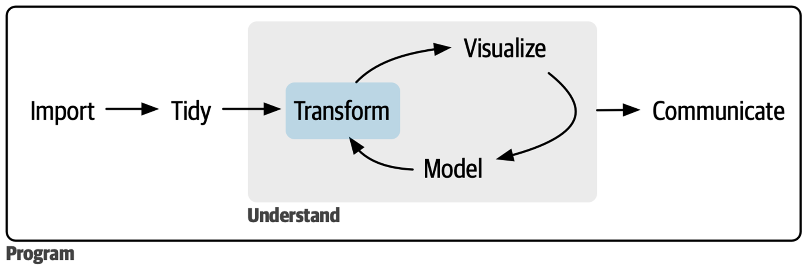
dplyr package

dplyr basics
The first argument is always a data frame.
The subsequent arguments typically describe which columns to operate on, using variable names (without quotes).
The output is always a data frame.
Types of dplyr functions
Functions are operated on:
Rows
Columns
Groups
Tables

Functions Operate on Rows
Four functions
filter(): 특정 변수(들)에 의거한 조건을 만족하는 행(들)을 추출arrange(): 특정 변수(들)에 의거해 행(들)의 순서를 변경distinct(): 특정 변수(들)에 의거해 (중복을 제거한) 고유한 행(들)을 추출slice():filter()함수처럼 특정 행(들)을 추출특정 변수와 관계 없이, 행의 위치에 의거해 특정 행(들)을 추출
특정 변수에 따른, 행의 위치에 의거해 행(들)을 추출
filter()
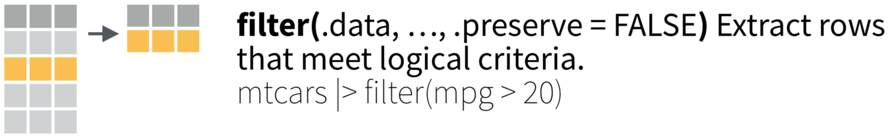
filter()
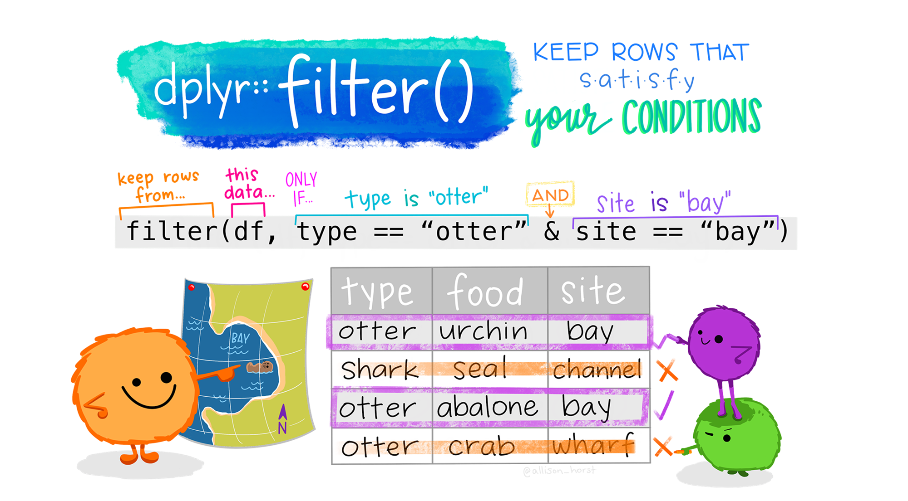
filter()
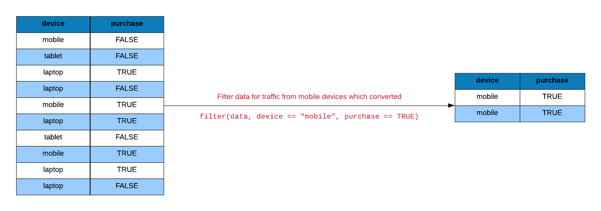
arrange()

arrange()

distinct()

distinct()
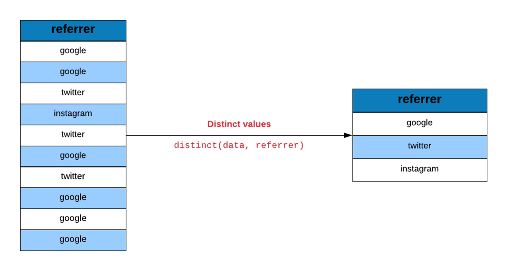
slice()
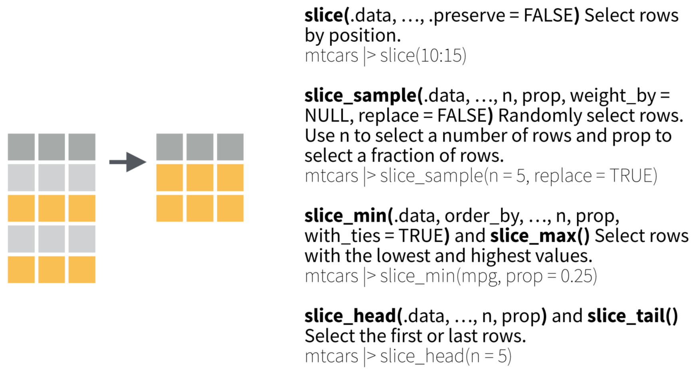
slice()
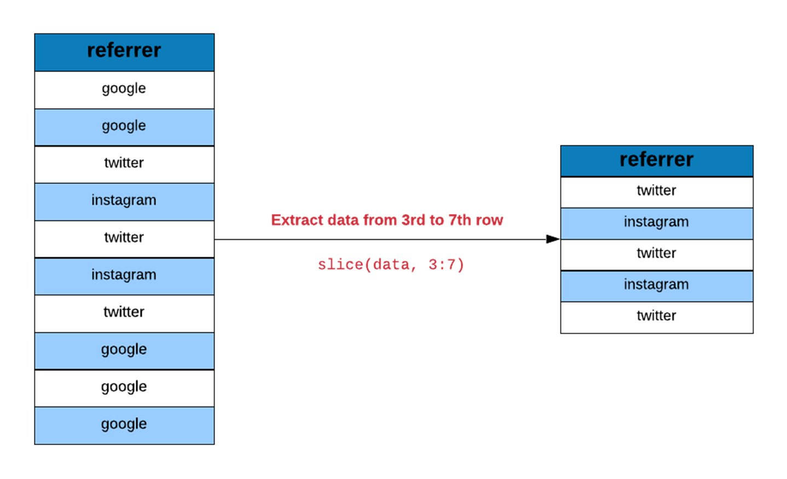
Functions Operate on Columns
Four functions
select(): 변수(들) 중 일부를 추출mutate(): 변수(들)를 변형해 새로운 변수를 생성rename(): 변수(들)의 이름을 변경relocate(): 변수(들)의 위치(순서)를 변경
select()

select()
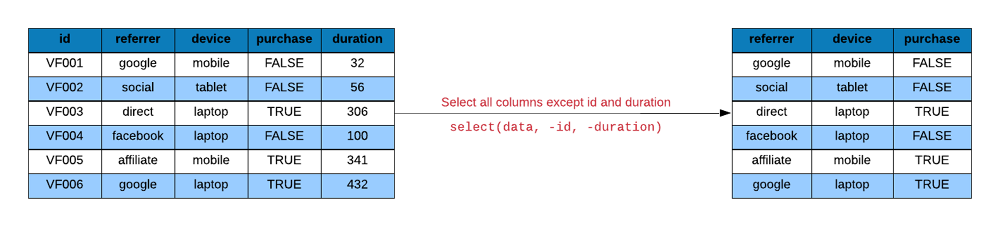
mutate()

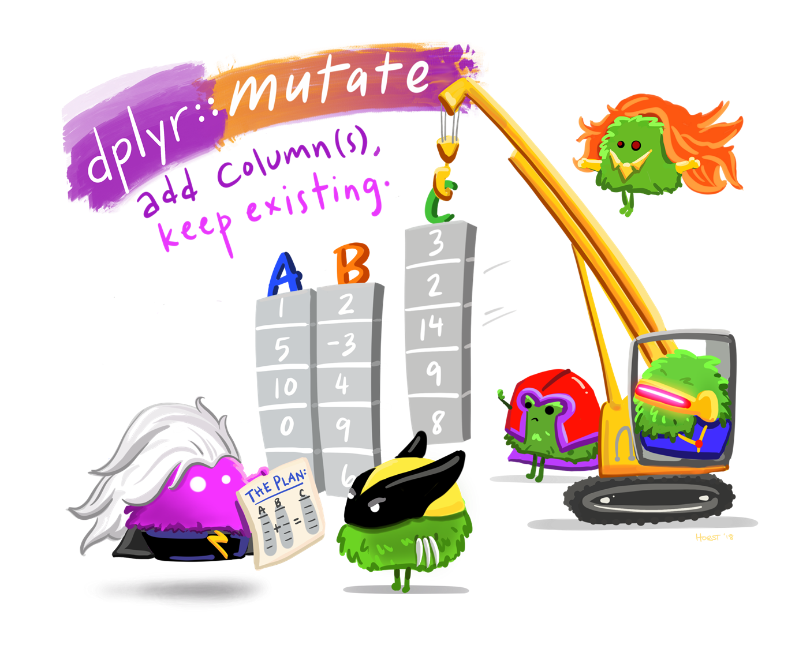
rename()
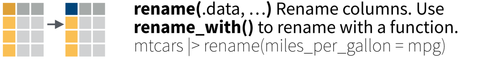
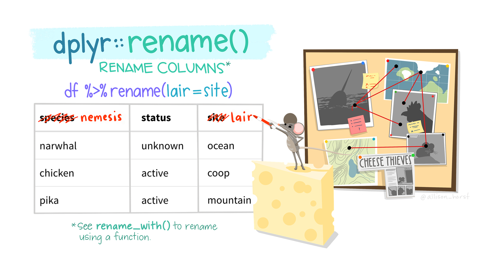
rename()
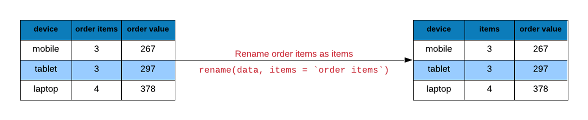
relocate()

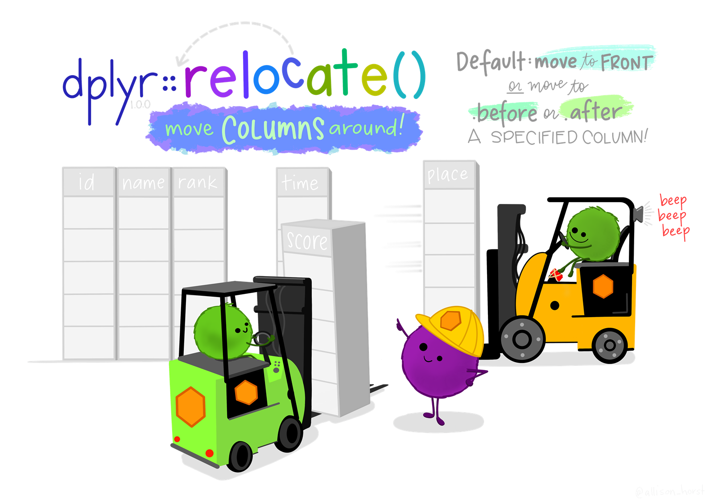
Functions Operate on Groups
Four functions
group_by(): 변수(들)에 의거해 전체 행(들)을 그룹으로 분할summarize(): 그룹별로 변수(들)의 통계량을 산출하여 새로운 변수(들)로 저장count(): 그룹별로 해당 관측개체의 빈도수를 계산across(): 그룹별로 여러 변수에 걸쳐 동일한 통계량을 산출하고 새로운 변수들로 저장
group_by()

group_by()
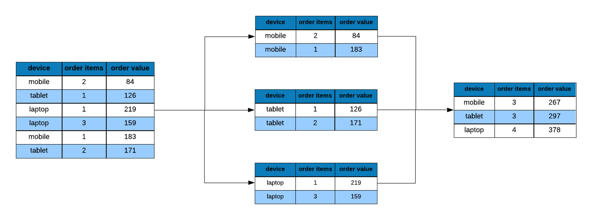
summarize()
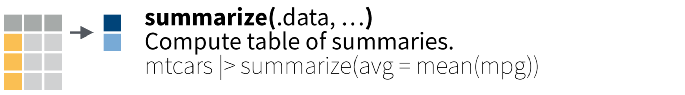
group_by() + summarize()
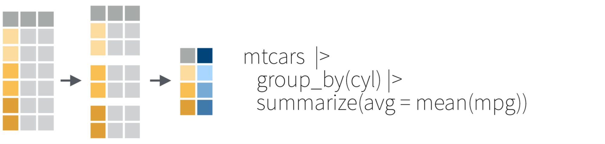
group_by() + summarize()

count()

count()

across()